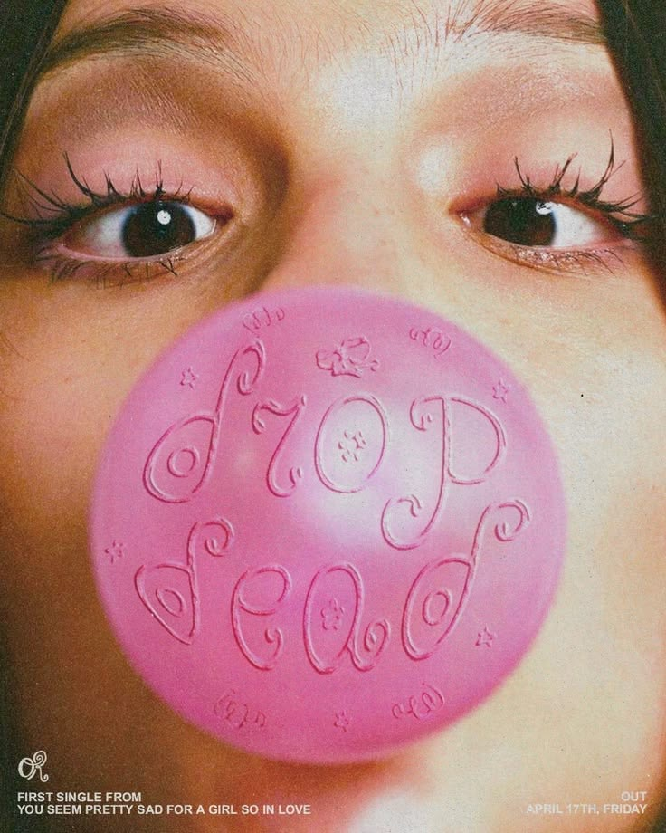
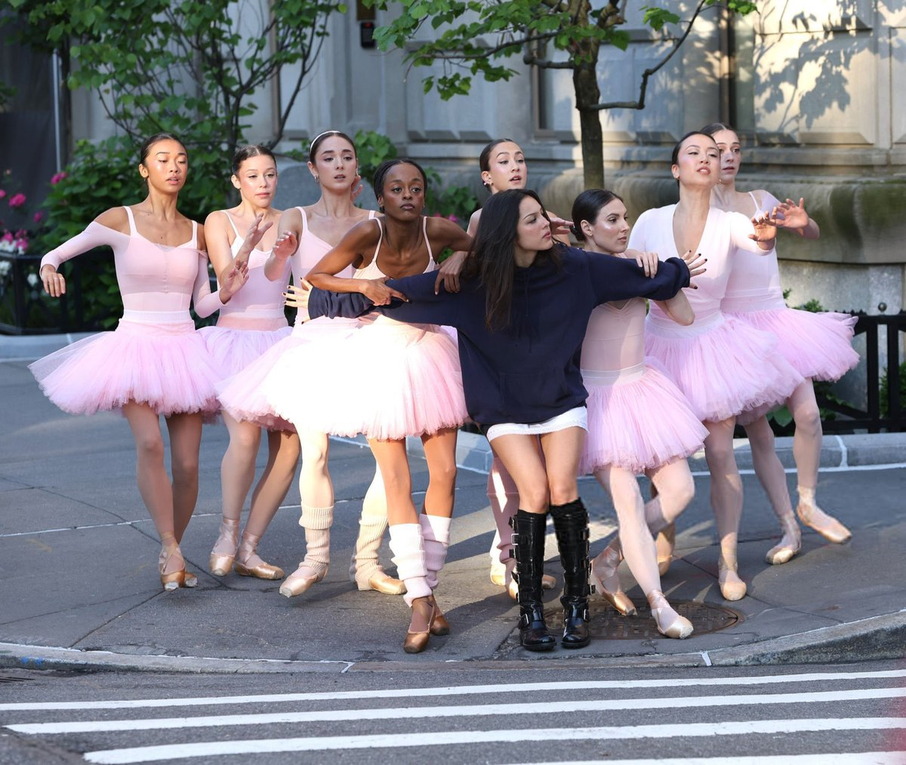
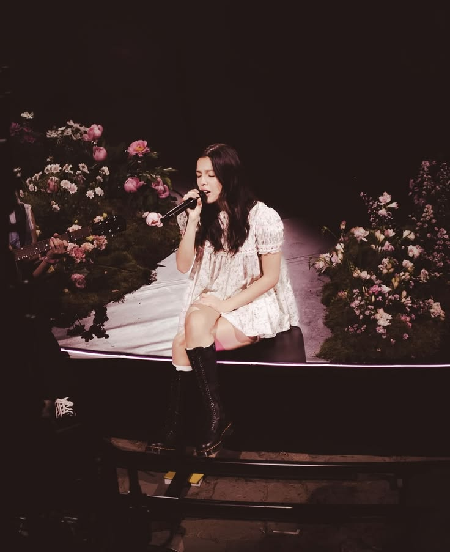

Estaremos analizando los albums realizados por Olivia desde el más actual al primero.
En su tercer disco, Olivia Rodrigo nos presenta un nuevo viaje musical que vamos a estar analizando canción por canción.
"Drop Dead", al ser la primer canción publicada del albúm, pudimos escucharla desde el 17 de abril. Esta canción funciona como una introducción de la estética de este nuevo disco. Desde el inicio, OLivia nos presenta un tono más intimo marcado por el estilo pop-rock y un estribillo fuerte y emocional. "Drop Dead" habla de cómo su amor a primera vista era supertficial y se termino volviendo casi obsesivo.

"Stupid Song" continúa la faseta romántica de Olivia. De una manera despreocupada y divertida, Olivia nos habla de lo que se siente al estar enamorado, describiendo lo profundo que puede ser ese sentimiento a pesar de lo reciente de la relación. Habla de cómo uno se pasa todo el dia pensando y deseando al otro. El sentimiento es tan fuerte que uno necesita "contarselo al mundo".

En "Honeybee", Olivia utiliza una atmósfera envolvente y vocalizaciones cercanas para hablarnos de la dulzura y el peligro que conlleva entregarse por completo a un nuevo sentimiento. La canción destaca por construir un puente instrumental sutil que desemboca en un estribillo tan melancólico como hipnótico.
"Maggots for brains" es uno de los títulos más llamativos del álbum, esta canción explora el lado más oscuro y cínico del desamor. Lo logra mezclando guitarras filosas con un tono vocal desafiante, Olivia expone el cansancio mental provocado por relaciones viejas que no deja de recordar continuamente. Con esta canción, Olivia demuestra la facilidad con la que puede hablar de la vulnerabilidad y la furia.
U + Me = <3 logra jugar con la nostalgia de las relaciones juveniles y la estética de los mensajes ocultos, esta canción adopta un sonido mucho más cercano al synth-pop luminoso. La letra contrasta la aparente simplicidad de una fórmula matemática romántica con la difícil realidad de un vínculo que se desmorona, logrando un balance perfecto entre estribillos altamente pegadizo.
"My way" habla del final de etapas. Esta desacelera el ritmo para ofrecer una interpretación vocal muy profunda apoyada en arreglos de piano y cuerdas. La canción aborda el doloroso proceso de priorizarse a una misma tras aceptar que retener a alguien solo causa heridas, convirtiéndose en uno de los momentos más maduros y reflexivos del álbum.
Purple esta llena de un estilo nocturno y soñador, esta canción utiliza el color del título para hacer referencia a un estado de ánimo ambiguo, entre la melancolía y la esperanza. Con sintetizadores espaciales y una instrumentación cuidada al detalle, Olivia reflexiona sobre las diferentes facetas de los vínculos afectivos, aquellos momentos donde ya no se sabe si vale la pena o no sostener esa relación.
"The cure” es el punto de quiebre en el álbum. Musicalmente, Olivia deja a un lado el pop rock para adentrarse a un sonido más indie rock y melancólico que transmite incertidumbre. La canción refleja el momento en que empieza a darse cuenta de que la relación que parecía sanar todos sus problemas quizás es, en realidad, la causa de ellos. Es la muestra de una Olivia más introspectiva, que convierte una contradicción emocional en el centro de una canción.
“Begged” es una de las canciones más vulnerables del disco. Su sonido es íntimo y acústico, que deja a la voz de Olivia en primer plano. La canción habla de una relación aunque las necesidades emocionales no son correspondidas, hasta llegar al punto de tener que rogar por lo que debería surgir naturalmente. Olivia, en lugar de expresar el dolor mediante el enojo, lo hace desde la paciencia, la inseguridad y la necesidad de sentirse elegida.
Con "What's Wrong With Me",es la primera vez que Olivia realiza un featuring con otro artista. Robert Smith (vocalista de la banda The Cure) se incorpora a esta canción de rock alternativo, con una clara conexión con el sonido de The Cure. La letra gira alrededor de la sensación de no reconocerse dentro de la relación y preguntarse si el problema está en uno mismo o en la persona que tiene al lado.
“less” es una balada de ruptura, que presenta una contradicción: Olivia sabe que la relación terminó, pero al mismo tiempo desea que la otra persona la hubiera amado menos, porque quizás así la ruptura habría dolido tanto. En lugar de enojarse, Oliva presenta el duelo desde una perspectiva más madura. Esto demuestra una evolución en sus letras: ahora el dolor es aceptado.
Después de varias canciones tristes, “expectations” cambia completamente la energía del álbum. Combina elementos electrónicos y tiene una actitud mucho más divertida y segura. La canción muestra a Olivia intentando reencontrarse después de la ruptura y estableciendo nuevas expectativas para sus futuras relaciones. Sin embargo, debajo de esa seguridad también existe la ironía de querer convencerse a sí misma de que ya está bien.

Como cierre del álbum, “cigarette smoke” funciona como una balada introspectiva. E humo del cigarro representa esa presencia que ya no esta pero aún se siente, aunque la persona ya no vuelva, sus recuerdos permanecen en el espacio y en la memoria. La canción tiene un tono vulnerable, mostrando que superar una relación no significa necesariamente dejar de extrañarla. Como cierre, completa el recorrido emocional del álbum, de estar completamente enamorada a comprender por qué esa relación terminó